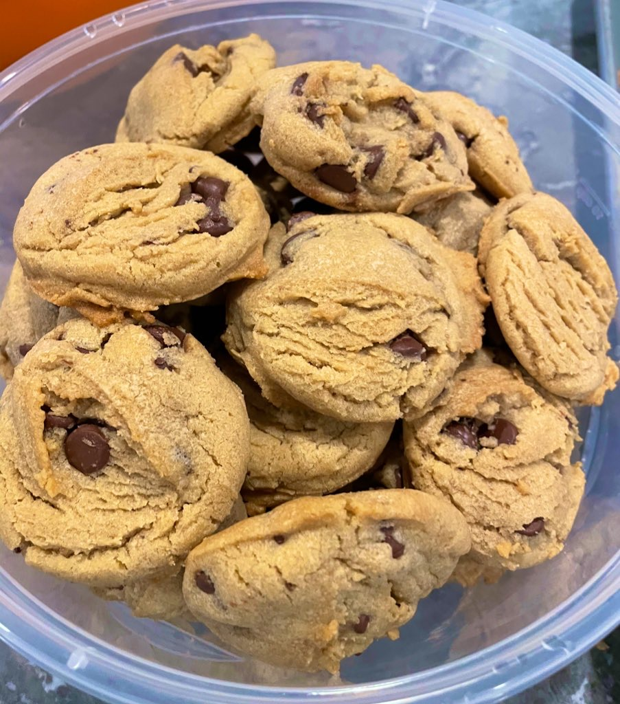

Tay Tay Cookies

A take on the classic cookie.
These are the fluffiest chocolate chip cookies you will ever have.
Ingredients
- 1 cup Crisco
- 1/2 cup butter
- 1 1/4 cup white sugar
- 1 1/4 cup brown sugar
- 1 tbsp vanilla
- 2 eggs
- 4 cups flour
- 2 tsp baking soda
- 1 tsp salt
- 2 cups semisweet chocolate chips
Steps
- Beat together the Crisco, butter, brown sugar, and white sugar until mixture's consistency is light and fluffy. This is the secret to a mouth watering chocolate chip cookie. Half way through this step, you will want to scrape the sides of the bowl. This will prevent any granules of sugar from not being mixed in.
- Add the eggs and vanilla. Mix these in until well blended.
- In a separate bowl, combine the flour, baking soda, and salt and mix together well.
- Slowly add the dry ingredients to the fluffy concoction in the mixer while mixing on low speed.
- Add in the chocolate chips
- Scoop into balls and place on baking pan
- Bake the cookies at 350 degrees F for 13-15 minutes.